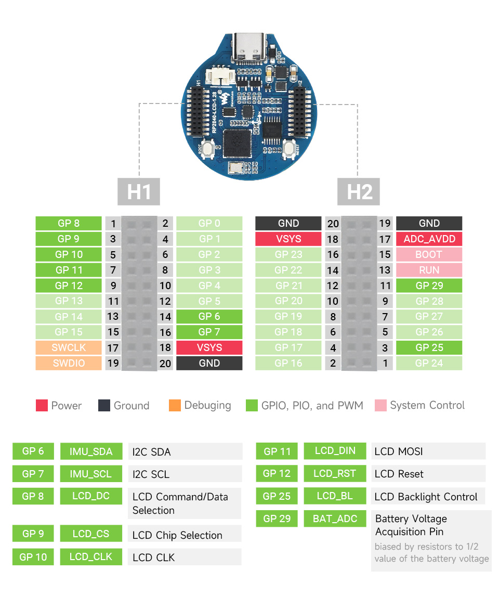

Waveshare RP2040 LCD 1.28
Tags: arch:arm chip:rp2040 vendor:raspberry-pi
The Waveshare RP2040 LCD 1.28 is a low-cost, high-performance MCU board designed by Waveshare based on RP2040 with onboard 1.28 inch LCD.

Features
RP2040 MCU chip designed by Raspberry Pi in the United Kingdom
Dual-core Arm Cortex M0+ processor, flexible clock running up to 133 MHz
264KB of SRAM, and 2MB of onboard Flash memory
Type-C connector, keeps it up to date, easier to use
Onboard 1.28-inch 240 x 240 resolution, 65K RGB IPS LCD display for clear color pictures
Lithium battery recharge/discharge header, suitable for mobile devices
All GPIOs are adapted through 1.27 pitch female headers (There are 30 pins in total, but some pins have been connected to the internal circuit, you need to pay attention when multiplexing, please refer to the wiki for details)
USB 1.1 with device and host support
Low-power sleep and dormant modes
Drag-and-drop programming using mass storage over USB
2 x SPI, 2 x I2C, 2 x UART, 2 x UART, 4 x 12-bit ADC, 16 x controllable PWM channels
Accurate clock and timer on-chip
Temperature sensor
Accelerated floating-point libraries on-chip
8 x Programmable I/O (PIO) state machines for custom peripheral support
Buttons and LEDs
No user LED is provided.
A BOOT button, which if held down when pressing RESET or power is first applied to the board, will cause the RP2040 to boot into programming mode and appear as a storage device to a computer connected via USB. Saving a .UF2 file to this device will replace the Flash ROM contents on the RP2040.
Pin Mapping
Pad |
Signal |
Notes |
|---|---|---|
2 |
GPIO0 |
Default TX for UART0 serial console |
4 |
GPIO1 |
Default RX for UART0 serial console |
Power Supply
The Raspberry Pi Pico can be powered via the USB connector, connecting a lithium battery through connector, or by supplying +5V to pin 18(VSYS). The board had a diode that prevents power from pin 18 from flowing back to the USB socket. Power through USB or VSYS will be charging the battery if connected. The schematic is available at RP2040-LCD-1.28-sch.pdf
Installation & Build
For instructions on how to to install the build dependencies and create a NuttX image for this board, consult the main RP2040 documentation.
Configurations
All configurations listed below can be configured using the following command in
the nuttx directory (again, consult the main RP2040 documentation):
$ ./tools/configure.sh waveshare-rp2040-lcd-1.28:<configname>
composite
NuttShell configuration (console enabled in UART0, at 115200 bps) with support for
CDC/ACM with MSC USB composite driver. conn command enables the composite
device.
fastboot_usb
Runs the USB fastboot daemon (fastbootd) on boot instead of NSH, exposed
as a USB composite device together with CDC/ACM (console enabled in USB
Port, at 115200 bps). On the host, fastboot devices, fastboot getvar
<var>, and fastboot reboot/fastboot reboot bootloader are
available. More details about the fastboot daemon are available at
fastbootd — NuttX latest documentation.
nsh
Basic NuttShell configuration (console enabled in UART0, at 115200 bps).
nsh-flash
Basic NuttShell configuration (console enabled in UART0, at 115200 bps with SMART flash filesystem.
nshsram
NuttShell configuration (console enabled in UART0, at 115200 bps) with interrupt vectors in RAM.
smp
Basic NuttShell configuration (console enabled in UART0, at 115200 bps) with both ARM cores enabled.
spisd
NuttShell configuration (console enabled in UART0, at 115200 bps) with SPI SD card support enabled.
SD card slot |
Waveshare RP2040 |
|---|---|
DAT2 |
Not connected |
DAT3/CS |
GP17 (SPI0 CSn) (Pin 22) |
CMD /DI |
GP19 (SPI0 TX) (Pin 25) |
VDD |
3V3 OUT (Pin 36) |
CLK/SCK |
GP18 (SPI0 SCK) (Pin 24) |
VSS |
GND (Pin 3 or 38 or …) |
DAT0/DO |
GP16 (SPI0 RX) (Pin 21) |
DAT1 |
Not connected |
Card hot swapping is not supported.
usbmsc
NuttShell configuration (console enabled in UART0, at 115200 bps) with support for USB MSC and CDC/ACM.
msconn and sercon commands enable the MSC and CDC/ACM devices. The MSC
support provides the interface to the SD card with SPI, so the SD card slot
connection like spisd configuration is required.
usbnsh
Basic NuttShell configuration using CDC/ACM serial (console enabled in USB Port, at 115200 bps).
fb
NuttShell configuration (console enabled in USB Port, at 115200 bps) with support for gc9a01 and video framebuffer example.
lvgl
NuttShell configuration (console enabled in USB Port, at 115200 bps) with support for gc9a01 and LVGL demo (using lcd_dev).